在入坑 Mac的第 11 年，推荐这 9 款不可或缺的软件
端午节放假前的周五才把新系统安装完成，系统安装的时候选择的是格式化硬盘，那就表示所有软件都需要重新安装。
在检索和安装软件的过程中翻朋友圈的时候发现人生中的第一台苹果电脑：Mac mini 是在 10 年前收到。

10 年间更换过多个电脑，系统每年都会升级，似乎变化少的是安装在电脑中的软件。 排除掉一些工作中会用的软件和工具，最近几年日常用的比较多的就是下面这 9 款，这次重装软件也特别顺利，用几个小时就全部搞定。
每一款都无需付费即可使用，部分软件有功能需要付费，订阅制和买断制的都有，可按需购买。
1 . 解压工具：The Unarchiver
一款好用且稳定的解压工具是必备的，要不然可能会出现软件好不容易下载下来了，出现恼人的不能解压，无法安装的情况。
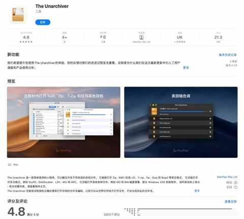
几乎你见过的和没见过的格式都支持：
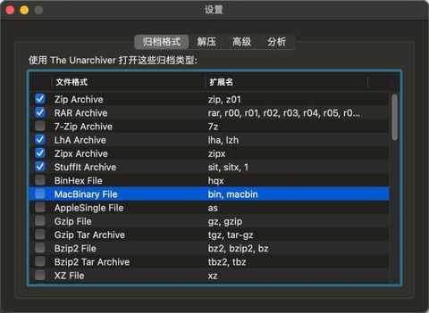
2. 菜单栏工具：MenubarX
不得不佩服开发者的脑洞，开发了一个菜单栏的浏览器，稳定性和流畅度都很好，使用几年没有闪退的情况。
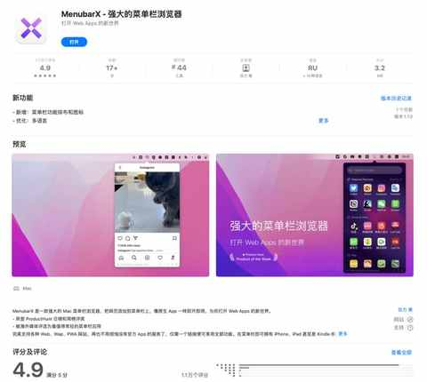
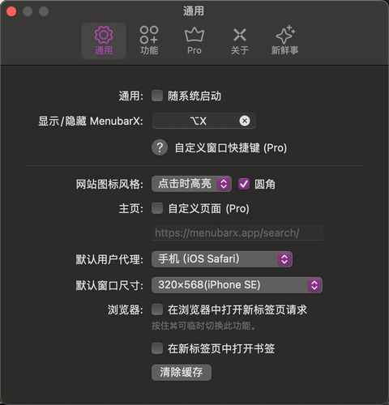
主要用来放 flomo 的网页版，方便随时记录和查看记录的内容：
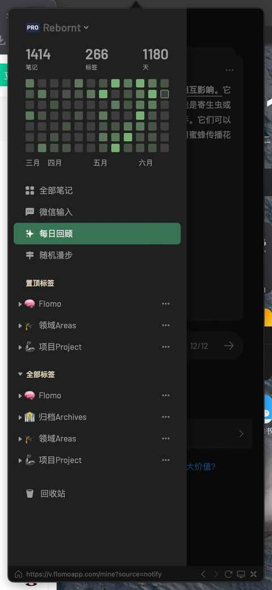
3. 清理工具：Lemon Cleaner
腾讯出品、免费、轻量级，当这三个关键词组合在一起的时候可能会稍显突兀但其实力确实不容小觑，在网络上有不少自来水。
无需打开主界面，在状态栏就能查看信息：
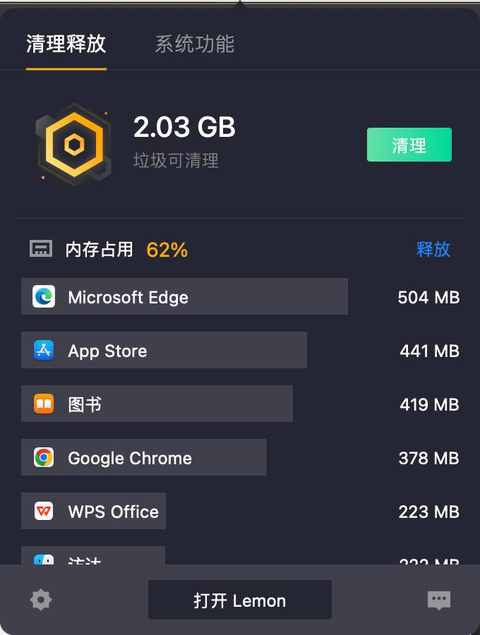
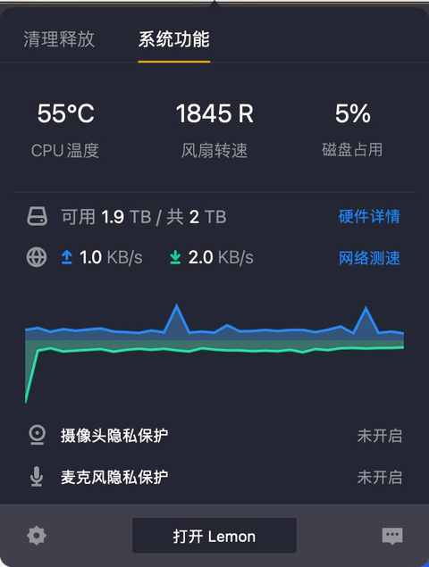
一般视硬盘空间情况，每周或每月清理一次：
4. 浏览器：Microsoft Edge
虽然现在 Edge浏览器官网第一屏就宣称是一款 AI 浏览器，不过当个乐子听就行了，浏览器的核心功能还得是能稳定快速的浏览各种网页，同时别像 Chrome 那样吃内存。
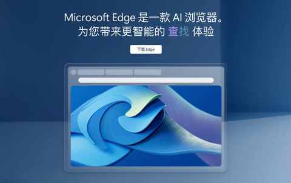
稳定、快速、不吃内存，Edge 都做到了，不止是这些，所有能在 Chrome上安装的浏览器插件，也能安装在 Edge 上，甚至自带【浏览器健康助手】功能：
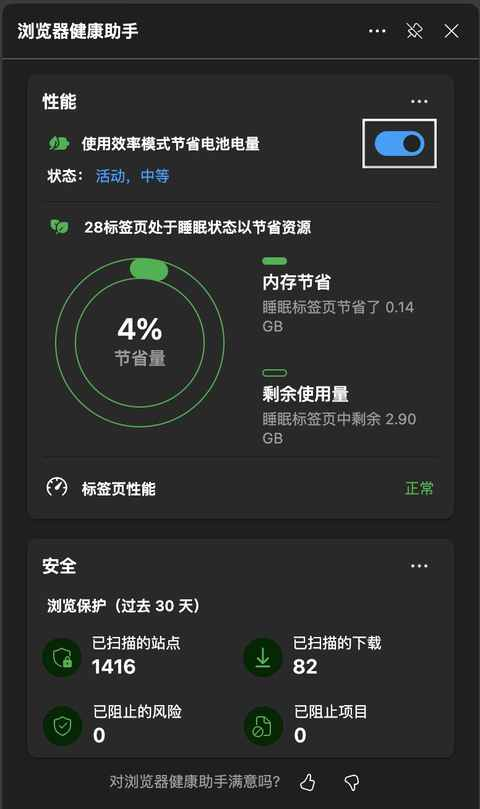
去年更新了分屏功能，有很强的可用性，特别是需要打开多个关联网页的时候，有效减少切换程序的频次：
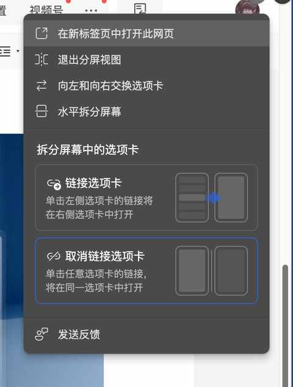
5. 启动器：Raycast
很多平台都有博主安利的启动器，用这款的原因也很简单，就是界面的颜值和交互上都很高级。
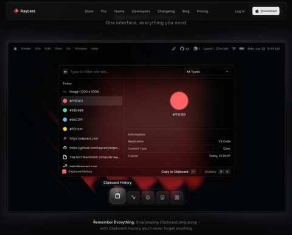
6. 电池管理：AlDente
适合 Macbook Pro 和 MacBook Air 的用户，可在日常插电使用的过程中限制充电量，从而达到保护电池的目的，从而让电脑能用更长时间。
一般设置 85% 的限制，充电到 85% 就开启放电模式：
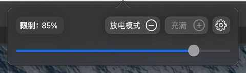
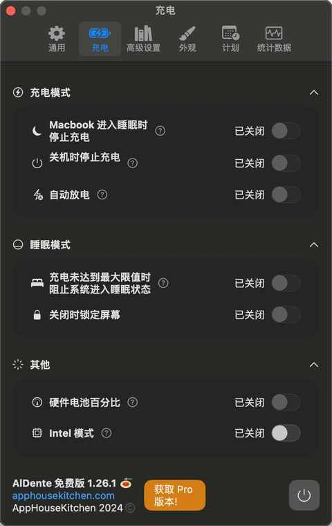
7. 截图工具：Snipaste
Windows 上口碑很好的截图软件，已推出 Mac公测版本。
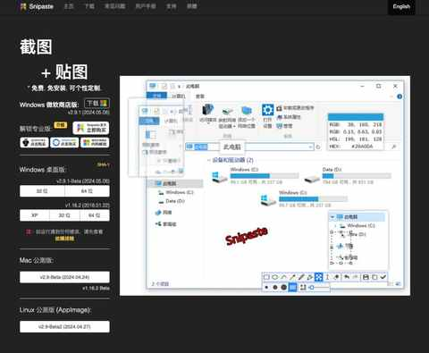
提供丰富的设置项，可根据自身需求去调整：
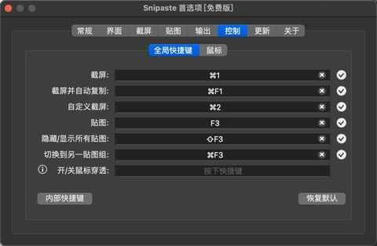
8. 分屏工具：Rectangle
免费、开源、界面美观再结合不低的更新频次，能在刚开始使用的过程中充满惊喜，习惯快捷键之后更会如鱼得水。
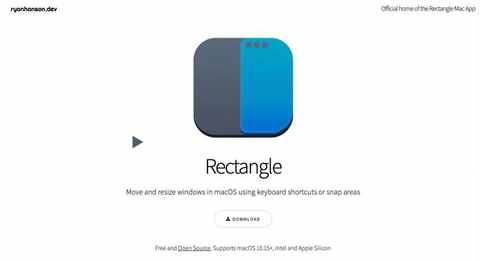
几乎所有快捷键均能自定义：
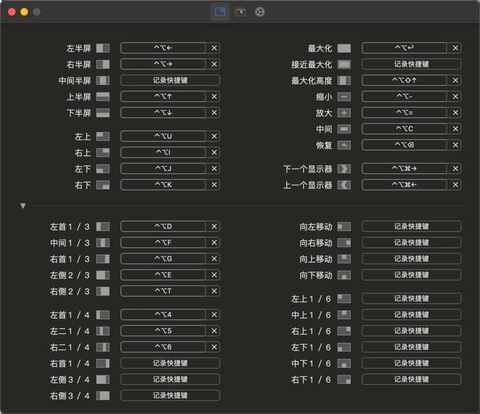
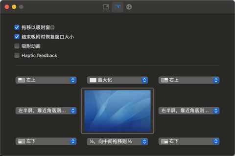
9. Office三件套：WPS Office
WPS 的稳定性与可用性还有响应速度，已没有多少可以吐槽的地方。
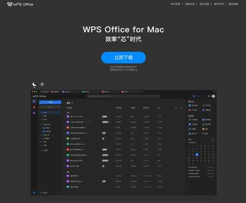
基本做到 all in one，所有能想到的办公文档的格式，WPS 都能提供：
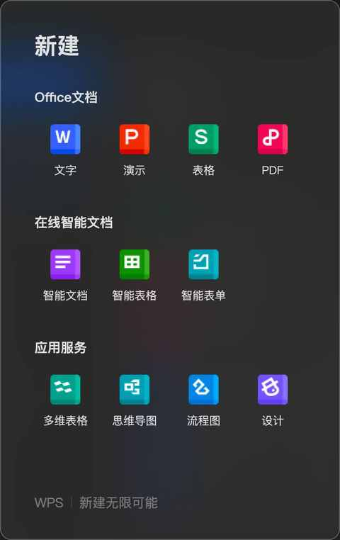
针对 pdf 文档的功能很全，转换、输出、压缩都能做到，甚至还支持编辑，能快速修改其中的文字内容：
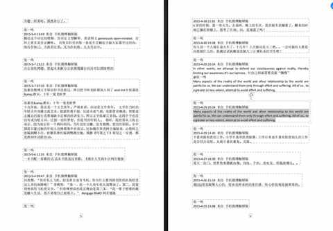